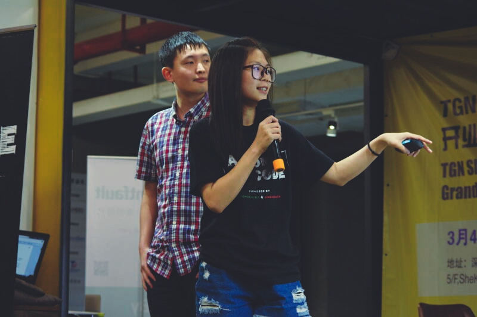

photo of me and my husband attending segmentfault hackthon 2016
About me
I’m a mother to a two years old baby girl, a wife, and a software engineer.
I stayed at home to look after my baby for almost one year. And I understand how mommies are underestimating themselves after leaving their workplace and how ladies feel anxious about being a mother. I’m not technically a successful woman. But I feel happy and loved as well as stressed out sometime with how I am coming through all these days and nights. So I open this blog and wish it could inspire someone. My blog will mainly focus on technology, but I’d like to share the story about parenting as well. Hope you would enjoy it.
Skills
Web Development:
- Mastery of web technologies (Javascript, ES6, Typescript, HTML, CSS, Ajax, HTTP)
- JS frameworks: ReactJS, VueJS, BackboneJS
- Node service frameworks: Express JS
- Bundle tool: Webpack
- Template Engine: Pug (Jade)
- UI: Bootstrap, Material UI, Element-UI
- CSS pre-compiler: SASS
- Test Tool: Jasmine, Mocha, Chai
- Others: Node, REST, MongoDB, NPM, yarn
- Experience with responsive design and cross-browsers development
Version Control:
Git, GitHubAgile:
SCRUMChinese:
nativeEnglish:
advancedJapanese:
advancedWork Experience
Emeritus
Sep/2020 – Now
Software Developer
Tasks performed:
- Develop new official website by using TypeScript, ReactJS and ElementUI.
- Develop features and maintain the official website by using Vue JS, Nuxt JS and Element UI.
- Develop html template engine to let salesperson generate email easily by using Typescript,ReactJS and Material UI.
Udacity
Apr/2018 – Apr/2019
Software Developer
Tasks performed:
- Develop features and maintain the official CN website by using Angular JS (version 7).
- Develop the CMS to make website more flexible to config.
- Develop WeChat mini program to display curriculums.
- Develop official course of WeChat mini program, including developing codes and being mentor.
EPAM Systems
Feb/2016 – Mar/2018
Software Developer
Tasks performed:
- Develop official E-commerce China website for a UK client by using Backbone JS.
- Maintain and improve website including developing new features to exhibit products in different looking and rebranding the whole style of website.
- Optimize applications for maximum speed
- Resize products’ images to suit browser resolution
- Lazy load images to get quick start render time
- Minimize external resources with Webpack
- Supervise CI system and deployment process.
- Participant technology/architecture improvements.
- Team meetings - by applying Agile Scrum methodology
EPAM Systems
May/2016 – Feb/2017
Junior Software Developer
Tasks performed:
- Develop features on the full functional E-commerce solution Hybris.
- Investigate technology integration (Data adaptor, Docker etc.) for further architecture design.
- Practices pair programming
ziroom
Sep/2015 – Jan/2016
Software Developer
Tasks performed:
- Develop the official recruiting system by using ReactJS and Webpack
- Develop compatible websites which are for advertising use
- Performed manual functional testing